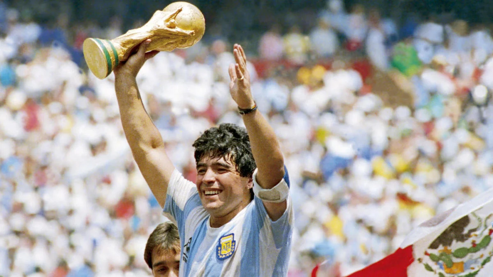

Diego Armando Maradona was an Argentine professional football player know for his dynamic play style. Widely regarded as one of the greatest players in the history of the sport, he was one of the two joint winners of the FIFA Player of the 20th Century award.
Maradona's Achievements
490 official club games during his 21-year professional career, scoring 259 goals
For Argentina he played 91 games and scored 34 goals
1 World Cup in the 1986 World Cup in Mexico

This is when Maradona used his hand to score and the goal still counted:
Did you know Maradona Died:
Here is the link to another website about Maradona.